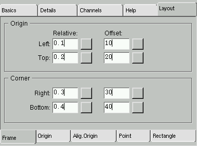
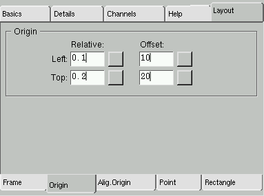
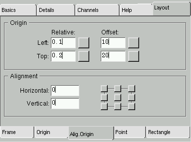
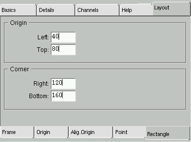
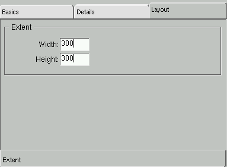

The Layout of the Widgets
Index
Introduction
The GUI Painter allows you to change the geometry layout of each widget.
At the time of writing this document,
five types of layouts are available.
(excluding an 'extented'
layout, which is set automatically to all widgets whose container
organizes
the layouts automatically - for example a panel).
The Layout section of the GUI Painter for the widgets provides
two major services:
-
changing the layout type of a widget
-
changing the set of values assigned to the current layout type
To access the layout of a widget, the widget and the Layout section
in the control window of the GUI Painter must be selected:
On the bottom of the Layout section, a list of all Layout
types available for the selected widget is shown (as tabs).
The default layout type of a widget is derived from its template widget
from the gallery window. The values can be changed or by selecting another
layout type, values of the new layout type are computed from the current
positions of the widget.
The Layout Types
The Frame Layout
In the Frame layout the origin of the widget is controlled by the left
and top, the corner or extent is defined by the right and bottom settings.
Each setting has a relative part plus an offset. In case of relative values,
the edges will change in relationship to that of its container widget.

The Frame section
For example, to arrange for a widget to always fill the top half of its
container, give it the following frame values:
- 0.0 relative origin left
- 0.0 relative origin top;
- 1.0 relative corner right
- 0.5 relative corner bottom
- all offsets 0
A Frame layout with zero relative parts is equal to a Rectangle
layout.
If a widget has been given a frame layout, the widgets own preferences
are ignored - the size is completely controlled by the window specification.
The Origin Layout
The Origin layout controls the origin of the widget via a relative
part plus an offset. In case of relative values the origin will change
in relationship to that of its container widget. The right and bottom value
derives from the widget extent.

The Layout/Origin section
If a widget has been given an origin-layout , the widgets extent is
controlled by the widget itself (i.e. its preferred extent is taken).
However, the widgets origin is controlled by the window specification.
The AlignmentOrigin Layout
Since the extent of a widget could be configured variable (not fixed),
the user may want to define a fixed edge to its current origin. The left
and top settings controls the origin of the widget. The user can now define
any reference point within the widget to be fixed. If the extent of the
widget changed, for example by switching the font, the widget is resized
whereby the reference point keeps its position. The reference point itself
is specified as a fraction of the widget size.

The Layout/Origin Alignment section
Notice, that the Origin layout above is a special case of the
AlignmentOrigin layout (reference point is the top-left corner).
The Point Layout
In the Point layout the origin of the widget is controlled by the
left and top settings via a fixed offset within its container widget. The
right and bottom value are derived from the widget extent.

The Layout/Point section
Notice, that the Point layout is a special case of the
Origin layout above (zero relative parts).
The Rectangle Layout
In the Rectangle layout all edges of the widget are fixed within
its container widget. Each setting is defined via an absolute offset. There
is no relationship of the sizes to that of its container. When the container's
size is variable, you may want to arrange the widget size in relation to
that of the container. Thus you may use a Frame layout with all
settings set to relative.

The Layout/Rectangle section
Notice, that the Rectangle layout is a special case of the
Frame layout above (zero relative parts).
The Extent Layout
In the Extent layout the widget's origin is controlled by its container
widget; only the extent of the widget is specified.

The Layout/Extent section

Copyright © 1998 eXept Software AG, all rights reserved